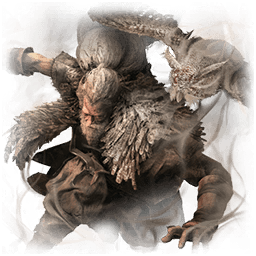
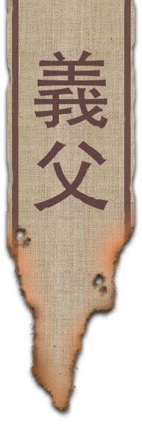

La Chouette, de son vrai nom Ukonzaemon Usui (薄井 右近左衛門), est un maître shinobi à la noblesse et à l'expérience incroyable. Il adopta un orphelin, séparé de sa famille lors du terrible conflit qui opposa le clan Ashina au clan Tamura. Peu de temps après, Usui devint un mentor pour le jeune garçon, et l'éduqua selon la voie shinobi.
Présumé mort depuis l'attaque du domaine Hirata, Usui ne reparaîtra que trois ans plus tard, où il exigera de son fils adoptif qu'il trahisse son nouveau maître.
"Un! Le parent doit être obéi. Leur volonté doit être obéie."
Ukonzaemon Usui